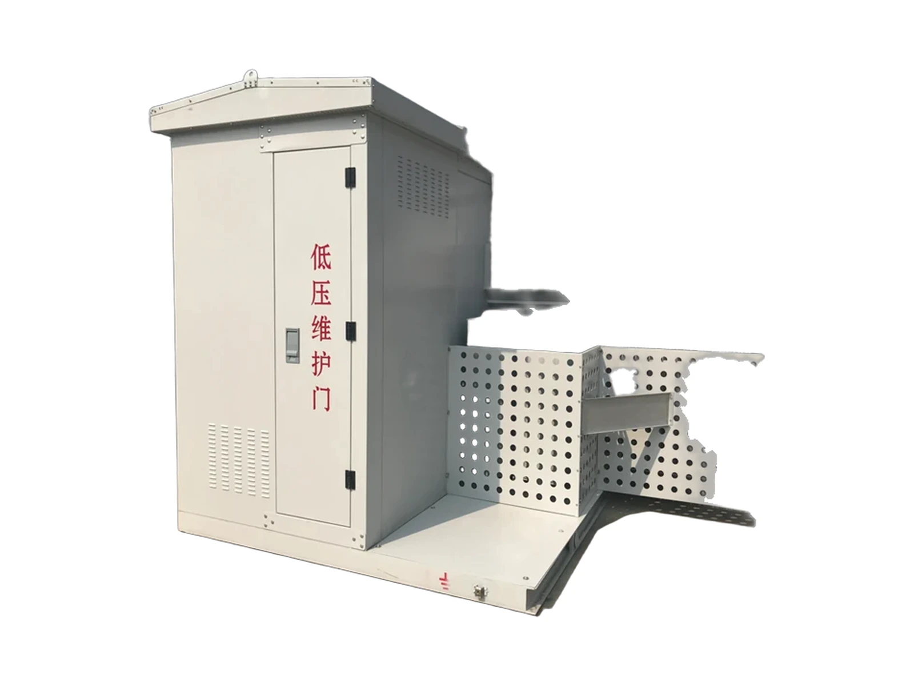
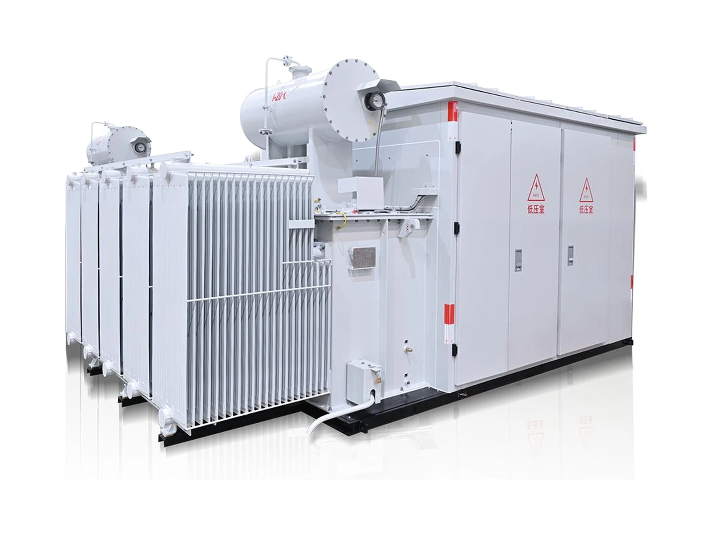
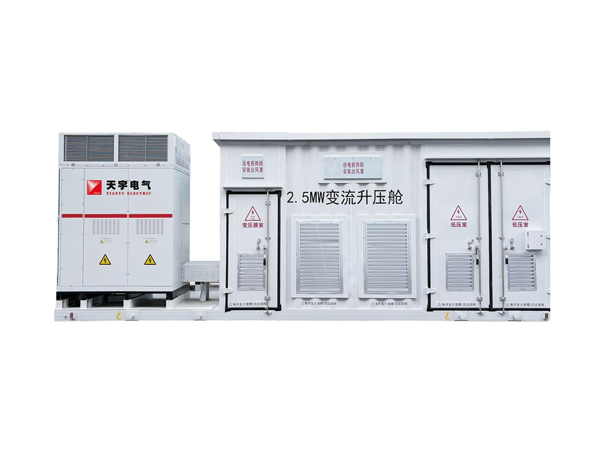

Products
Transformers and prefabricated substations.
Explore distribution, power-transformer and substation specifications for your project.
Power transformers
Oil-immersed power transformers from 35 kV to 220 kV, plus special units for renewable booster stations, offshore wind and mobile supply.
 SZ-8000~31500/3535 kV Oil-Immersed Power TransformerOn-load voltage-regulating power transformer for 35–38.5 kV systems.Rated power8–31.5 MVAHigh voltage35–38.5 kVEfficiency> 99.6 %
SZ-8000~31500/3535 kV Oil-Immersed Power TransformerOn-load voltage-regulating power transformer for 35–38.5 kV systems.Rated power8–31.5 MVAHigh voltage35–38.5 kVEfficiency> 99.6 % SZ-6300~63000/6666 kV Oil-Immersed Power TransformerOn-load voltage-regulating power transformer for 63 / 66 / 69 kV systems.Rated power6.3–63 MVAHigh voltage63–69 kVEfficiency> 99.6 %
SZ-6300~63000/6666 kV Oil-Immersed Power TransformerOn-load voltage-regulating power transformer for 63 / 66 / 69 kV systems.Rated power6.3–63 MVAHigh voltage63–69 kVEfficiency> 99.6 % SSZ-6300~63000/110110 kV Three-Winding Power TransformerThree-winding on-load voltage-regulating power transformer for 110 kV substations.Rated power6.3–200 MVAHigh voltage110–121 kVWindings3
SSZ-6300~63000/110110 kV Three-Winding Power TransformerThree-winding on-load voltage-regulating power transformer for 110 kV substations.Rated power6.3–200 MVAHigh voltage110–121 kVWindings3 SSZ-31500~240000/220220 kV Three-Winding Power TransformerThree-winding on-load voltage-regulating main transformer for 220 kV substations.Rated power31.5–420 MVAHigh voltage220–242 kVWindings3
SSZ-31500~240000/220220 kV Three-Winding Power TransformerThree-winding on-load voltage-regulating main transformer for 220 kV substations.Rated power31.5–420 MVAHigh voltage220–242 kVWindings3 220 kV double-split220 kV Double-Split Booster TransformerDouble-split transformer for offshore and onshore wind and photovoltaic 220 kV booster stations.Voltage class220 kVAvg. winding rise≤ 55 KPD at 1.58 Ur< 50 pC
220 kV double-split220 kV Double-Split Booster TransformerDouble-split transformer for offshore and onshore wind and photovoltaic 220 kV booster stations.Voltage class220 kVAvg. winding rise≤ 55 KPD at 1.58 Ur< 50 pC 66 kV liquid-immersed nacelle66 kV Offshore Wind Nacelle TransformerLiquid-immersed nacelle transformer for floating wind turbines in deep and open seas.Voltage66 kVInsulating liquidNatural esterTestsCNAS lab
66 kV liquid-immersed nacelle66 kV Offshore Wind Nacelle TransformerLiquid-immersed nacelle transformer for floating wind turbines in deep and open seas.Voltage66 kVInsulating liquidNatural esterTestsCNAS lab 35–110 kV vehicle-mounted35–110 kV Mobile Intelligent SubstationVehicle-mounted substation for temporary supply and rapid restoration after natural disasters.Voltage35–110 kVDeploymentTowableTestingIn factory
35–110 kV vehicle-mounted35–110 kV Mobile Intelligent SubstationVehicle-mounted substation for temporary supply and rapid restoration after natural disasters.Voltage35–110 kVDeploymentTowableTestingIn factoryDistribution transformers
Oil-immersed and cast-resin dry-type distribution transformers up to the 35 kV class, including energy-saving, amorphous-alloy and rectifier units.
 0–35 kV · 12 kV distribution / 35 kV step-upOil-Immersed Distribution TransformerOne oil-immersed series, with separate 12 kV distribution and 35 kV step-up parameter examples.Voltage range0–35 kVParameter examples12 kV / 35 kVRated power30 kVA–12.5 MVA
0–35 kV · 12 kV distribution / 35 kV step-upOil-Immersed Distribution TransformerOne oil-immersed series, with separate 12 kV distribution and 35 kV step-up parameter examples.Voltage range0–35 kVParameter examples12 kV / 35 kVRated power30 kVA–12.5 MVA SCB14 (grade 2), SCB18 (grade 1)SC(B)14 / SC(B)18 Dry-Type Energy-Saving Transformer35 kV and below cast-resin dry-type transformers to the GB 20052-2024 efficiency grades.Max. design capacity8000 kVANoise≤ 54 dBEmergency load140 %
SCB14 (grade 2), SCB18 (grade 1)SC(B)14 / SC(B)18 Dry-Type Energy-Saving Transformer35 kV and below cast-resin dry-type transformers to the GB 20052-2024 efficiency grades.Max. design capacity8000 kVANoise≤ 54 dBEmergency load140 % SCBH15, SCBH17, SCBH19SC(B)H17 / SC(B)H19 Amorphous-Alloy Dry-Type TransformerThree-phase three-column amorphous-alloy dry-type transformer for data centres, telecom centres and semiconductor plants.Max. design capacity4000 kVACoreAmorphousNoise≤ 54 dB
SCBH15, SCBH17, SCBH19SC(B)H17 / SC(B)H19 Amorphous-Alloy Dry-Type TransformerThree-phase three-column amorphous-alloy dry-type transformer for data centres, telecom centres and semiconductor plants.Max. design capacity4000 kVACoreAmorphousNoise≤ 54 dB Intelligent dry-typeEnergy-Saving, Low-Noise Intelligent Dry-Type TransformerDry-type distribution transformer with an intelligent terminal for real-time monitoring and remote transmission.Voltage class≤ 35 kVInsulationClass F+MonitoringReal time
Intelligent dry-typeEnergy-Saving, Low-Noise Intelligent Dry-Type TransformerDry-type distribution transformer with an intelligent terminal for real-time monitoring and remote transmission.Voltage class≤ 35 kVInsulationClass F+MonitoringReal time SC(Z)11~1835 kV Large Dry-Type Power TransformerLarge cast-resin power transformer for commercial centres, real estate, hospitals and engineering projects.Max. design capacity25 MVAVoltage class35 kVFirst SCZ12-25000/352023
SC(Z)11~1835 kV Large Dry-Type Power TransformerLarge cast-resin power transformer for commercial centres, real estate, hospitals and engineering projects.Max. design capacity25 MVAVoltage class35 kVFirst SCZ12-25000/352023 S(S)CB11~18Dry-Type Transformer for Energy Storage, Wind and PVDry-type transformer for energy-storage, wind and photovoltaic projects with a large air-volume cooling system.Max. design capacity8000 kVAInsulationClass F+CoolingLarge air volumeRectifier designOil-immersed rectifier35 kV and Below Rectifier Power TransformerConverts AC grid power for rectifier equipment that supplies DC to industrial processes.Voltage class≤ 35 kVDesign life30 yearsExample8000 kVA
S(S)CB11~18Dry-Type Transformer for Energy Storage, Wind and PVDry-type transformer for energy-storage, wind and photovoltaic projects with a large air-volume cooling system.Max. design capacity8000 kVAInsulationClass F+CoolingLarge air volumeRectifier designOil-immersed rectifier35 kV and Below Rectifier Power TransformerConverts AC grid power for rectifier equipment that supplies DC to industrial processes.Voltage class≤ 35 kVDesign life30 yearsExample8000 kVA ZBSS-6300/35 pair24-Pulse Phase-Shifting Rectifier TransformerPhase shifting on the HV side cancels large low-order harmonics and their pollution of the grid.Pulses24Unit rating6300 kVAVoltage35 kV
ZBSS-6300/35 pair24-Pulse Phase-Shifting Rectifier TransformerPhase shifting on the HV side cancels large low-order harmonics and their pollution of the grid.Pulses24Unit rating6300 kVAVoltage35 kVPrefabricated substations
Factory-assembled substations combining transformer, HV and LV switchgear for distribution, renewable and energy-storage projects.

ZGS seriesZGS Combined Transformer (American-Type)Transformer body, HV load switch and fuses immersed in insulating oil, with LV metering and compensation as required.Rated capacity200–4000 kVAHigh voltage7.2–40.5 kVAltitude≤ 5000 m YB-12 (40.5) seriesYB Prefabricated Substation (European-Type)Transformer, HV and LV switchgear in one enclosure, for public buildings, industry, transport and new energy.Rated capacity200–8000 kVAHigh voltage7.2–40.5 kVProtectionup to IP65
YB-12 (40.5) seriesYB Prefabricated Substation (European-Type)Transformer, HV and LV switchgear in one enclosure, for public buildings, industry, transport and new energy.Rated capacity200–8000 kVAHigh voltage7.2–40.5 kVProtectionup to IP65
YBH seriesYBH Chinese-Type Prefabricated SubstationStep-up substation for photovoltaic and wind generation, sized for the higher ratings of new-energy grids.Rated capacity200–15000 kVAVoltage10–35 kVHV breaking31.5 kA
Integrated step-up machinePV Inverter / Converter Energy-Storage Integrated MachineInverter or converter PCS, transformer and HV switch integrated for PV and energy-storage stations.Rated capacity2000–15000 kVAHigh voltage7.2–40.5 kVProtectionup to IP65Have a specification or single-line diagram?
Send it with your inquiry and engineering will review ratings, site conditions and required documents.